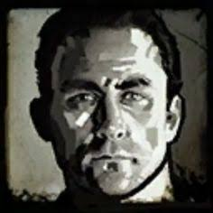

Nick
Nick

Descripción:
Nick es uno de los cuatro supervivientes jugables de Left 4 Dead 2. Es un hombre
con un pasado turbio ―incluso violento―. Parece reacio a ser parte del grupo y asume
el papel de "el quejoso", encontrando fallas en los planes de otras personas, el estado
cada vez más lamentable de su otrora excelente traje y los defectos de carácter de sus
compañeros de equipo, mientras los juzga. Al principio, esto hace que a los demás les
resulte difícil llevarse bien con él, pero eso cambia con el paso del tiempo, ya que
aprende a confiar en ellos y demuestra ser una parte valiosa del equipo.
-Volver a Supervivientes